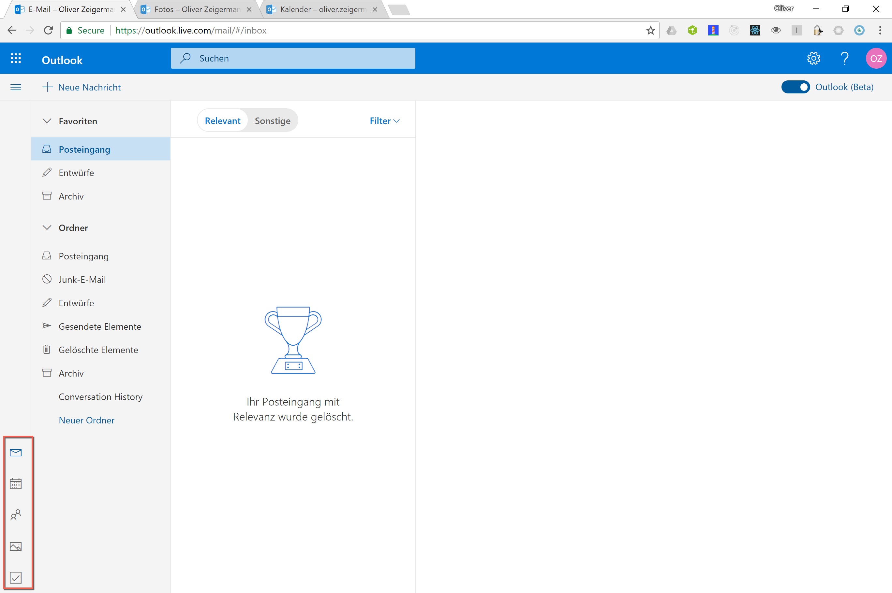
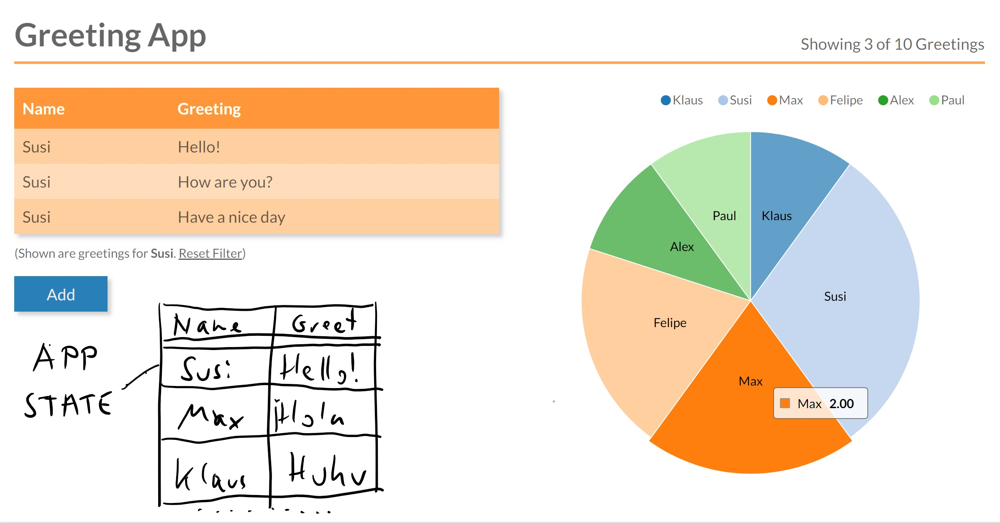
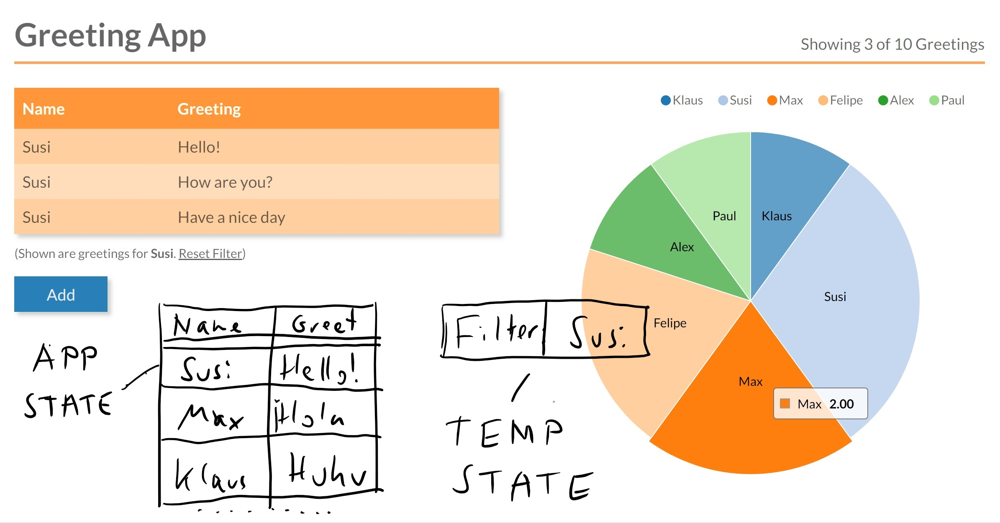
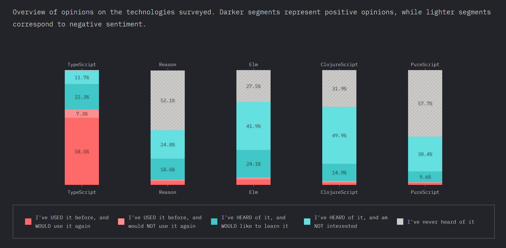

Moderne Frontend-Architekturen für Single-Page-Anwendungen
Wir nehmen Frontend-Architektur nicht für voll
Zitate
- Frontend-Architektur? Ich dachte sowas gibt es gar nicht
- Das Frontend kloppen wir am Ende einfach irgendwie drauf
- Architektur für ein bisschen CSS-Pixel-Geschubse?
- Von Frontend habe ich keine Ahnung - muss also leicht sein! (das ist paraphrasiert, ist so nicht gefallen)
Prominentes Beispiel für Client Side Include: Spotify mobile App

Dies gilt nur für die App, der Web Player ist seit einiger Zeit als React-Monolith gebaut: http://labs.spotify.com/2019/03/25/building-spotifys-new-web-player/
Architekturbedingte UX-Probleme
Apps nur gleichzeitig dargestellt, aber nicht komplett integriert
Prominentes Beispiel für Reine Vertikalen: Outlook Online
Architekturbedingte UX-Schwächen
unterschiedliche Technologien, jede App wird anders dargestellt
Wechsel der App dauert (Service Workers können die Zeit ab 2. Aufruf vermindern)
Umstellung auf React fortlaufend
Prominentes Beispiel für SPA Deployment-Monolith: Google Docs

Keine architekturbedingten UX Probleme
Beispiel

Was wären Kandidaten für Smart-/Dumb-Components?
Dumb

Smart

Grenzen von Smart/Dumb
Besonders bei wachsenden und langlebigen Anwendungen
- Tendenz zu "Gottkomponenten": Zustand und Logik wandern langsam nach oben in eine einzige Komponente
- Vermischung von Framework und UI-Logik (erschwert Austausch das Frameworks und das Testing)
- Verteilter, veränderlicher Zustand erschwert Wartbarkeit
- Zustand oft nicht klar zuzuordnen
- In welchem Zustand ist die Anwendung?
- Architektur immer noch unklar
- Wo ist Nebenläufigkeit erlaubt?
- Wie läuft die Initialisierungsphase
- Wie testet man die Business Logik?
Redux
- Zentrale Zustandsverwaltung: ein Speicher (Store) für die gesamte Anwendung, wie eine Datenbank
- Externe Zustandsverwaltung: Extrahieren von Logik und Zustand aus den (UI-)Komponenten
Redux
Architektonische Richtlinien
- Uni-direktionaler Datenfluss
- Externer, zentraler und unveränderlicher Zustand: Store
- Nur reducer dürfen den Zustand verändern
- Zustand wandert von Smart Components zum Store
- UI-Logik wandert von Smart Components in Action-Creators / Services und Reducer
- Asynchroner Code nur in Action-Creators / Services oder Effects
- Initialisierung der Anwendung mit zentraler Aktion
Ein Beispiel

Welche Daten braucht man minimal zur Darstellung?
Application State
Local UI State
Views

Redux ist unabhängig vom Framework
Implementierungen existieren für alle wichtigen UI-Frameworks
- React: http://redux.js.org/docs/basics/UsageWithReact.html
- Angular: https://github.com/ngrx/store
- Vue: https://github.com/vuejs/vuex / https://github.com/revue/revue
- Web Components (Polymer): Empfohlene Implementierung des Global Mediator Pattern, https://twitter.com/DJCordhose/status/899943415353311232 https://tur-nr.github.io/polymer-redux/
Code Sample: Reducer
Nur eine Funktion, daher unabhängig vom UI Framework
type Greeting = {
greeting: string;
name: string;
}
type SaveGreetingAction = {
type: 'ADD_GREETING',
greeting: Greeting
}
function greetingsReducer(state: Greeting[] = [],
action: SaveGreetingAction) {
switch (action.type) {
case 'ADD_GREETING':
// immutable operation, creating new state
return [...state, action.greeting];
default:
return state;
}
}
Code Sample: Action Creator
Ebenso unabhängig vom UI Framework
async function loadGreetings(dispatch) {
try {
const response = await fetch(BACKEND_URL);
const json = await response.json();
dispatch({
type: SET_GREETINGS,
greetings: json
});
} catch (err) {
console.error('LOADING GREETINGS FAILED:', err)
}
}
Wieder nur eine Funktion, der einzige Ort an dem asynchrone Operationen erlaubt sind
Ist das nur eine spinnige Idee, oder nutzt das echt jemand?
 Microsoft Outlook, Twitter, Apple, XING and many others use React and Redux
Microsoft Outlook, Twitter, Apple, XING and many others use React and Redux
Wrap Up Redux
Ein UI-Muster für Benutzerschnittstellen
- Mainstream-Lösung
- unabhängig vom SPA-Framework
- Einfaches Testen der Geschäftslogik, da die Logik nur in reinen Funktionen implementiert ist ("Reducer")
- Großartiges Debugging wegen der Entwicklungswerkzeuge
- Funktioniert hervorragend in großen Anwendungen mit vielen Abhängigkeiten zwischen Teilen/Komponenten
- Bietet eine architektonische Anleitung, wohin welcher Teil der Anwendung geht
Warum Typensysteme verwenden?
Ein Typsystem macht den Code einfacher zu warten
- kann Code besser lesbar machen
- kann Code leichter analysierbar machen
- kann zuverlässiges Refactoring ermöglichen
- kann eine allgemein bessere IDE-Unterstützung ermöglichen
- kann einige (typbezogene) Fehler frühzeitig erkennen
Anders Hejlsberg@Build2016: Big JavaScript codebases tend to become "read-only".
JavaScript flavors
Basics
// variables can have type information
let foo: string;
foo = 'yo';
// Error: Type 'number' is not assignable to type 'string'.
foo = 10;
// types can be inferred (return type)
function sayIt(what: string) {
return `Saying: ${what}`;
}
const said: string = sayIt(obj);
class Sayer {
what: string; // mandatory
constructor(what: string) {
this.what = what;
}
// return type if you want to
sayIt(): string {
return `Saying: ${this.what}`;
}
}